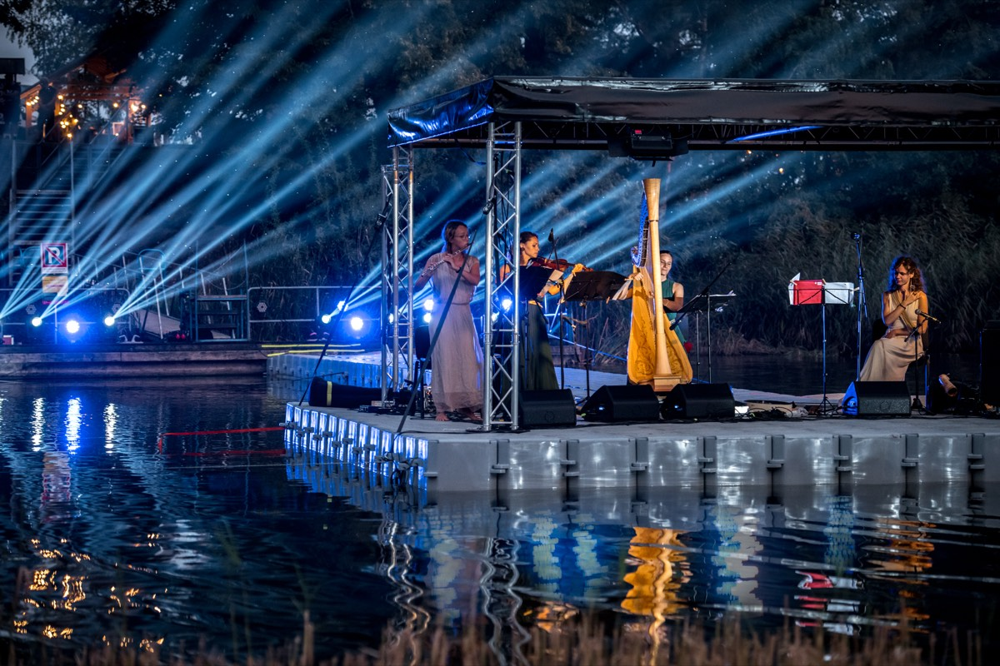

Concerts and performances
Classical programmes for celebrations and commemorations. Alternative concerts — performances that bring together music, poetry, dance and image. Length, line-up and repertoire agreed in advance.
Ask about programmesElena Daunytėcellist · vocalist · poet · creator
Towards conscious change in the presence of music and the arts
Classical music concerts and alternative performances, cultural education, harmonising mindfulness events, and celebrations produced from A to Z — for schools, cultural centres, manor houses, companies and private clients across Lithuania.

What I offer
Every programme is adapted to the space, the occasion and the audience — from a school hall to a manor courtyard or a yoga studio. Or perhaps simply in the embrace of nature?

Classical programmes for celebrations and commemorations. Alternative concerts — performances that bring together music, poetry, dance and image. Length, line-up and repertoire agreed in advance.
Ask about programmes
Educational concerts and cultural sessions for schools, funded through Lithuania's Culture Passport scheme. Creative workshops and instrument lessons for children and adults alike.
See the sessions
The artistic part of a wedding, anniversary or company celebration — or the whole event turnkey: programme, performers, stage, sound, catering, photographer. One contact and one invoice instead of five.
Discuss an event
Music, word, scent and dance experiences for adults. A yoga and meditation package, mindfulness practices, seminars on a chosen theme, and retreats with live sound.
Build a package
Events where the audience does more than listen: they take part, they choose, and sometimes they sound. A good fit for communities, company teams, family celebrations, large concert halls and the Christmas season.
How it works
“Dive into personality” — a live conversation with the performer straight after the concert, while the stage is still warm. The audience comes closer to the artist, and the artist puts into words what they lived through on stage. Filmed; the recording stays with the organiser. Also: finding performers for your celebration.
Tell me moreLet it come!
Have a listen
Which is why it is here, and not at the bottom of the page.
“33 įkvėpimai” is an experience where three ways of returning to yourself meet: the poetic word, music and conscious breathing. The evening is built around poet Elena Daunytė’s book “33 įkvėpimai” – 33 tercets born of silence, experience and transformation.
Elena reads her poetry, while Ninah Sol guides the conscious breathing practices, gently and safely inviting participants to feel their breath, slow down and relax. The whole experience is wrapped in calm, specially chosen music. No prior skills or preparation are needed: simply sit down, close your eyes and let the words, the sound and the breath carry you. Breath becomes rhythm, music becomes support, and poetry becomes a mirror in which everyone may recognise something of their own.
It is a space to pause and feel that sometimes a single conscious breath is enough to give the day a different colour.
After the event, the book “33 įkvėpimai” can be purchased directly from the author.
Open your heart to the flow of time, breath, music and words!
Let it come!
Sessions that meet the Culture Passport criteria. They fit into a single lesson, and a classroom is space enough.
Seasonal, Christmas and alternative programmes with a clear price, a technical rider and an agreed schedule.
An acoustic programme for a courtyard, a hall, a church or an unusual space — no stage and no power needed. I can be a standing part of your seasonal offer.
The artistic part of an evening, a company celebration, or the whole event turnkey. For agencies — a ready-made entry in your Christmas catalogue.
Ceremony music and the artistic part of the evening. If needed, I also find the other performers — dancers, vocalists, actors.
Live sound for yoga, meditation and mindfulness practice. Harmonising music, word, scent and dance sessions for adults.
Let it come!
Education
Education for children and adults. The first two sessions are delivered to schools through the Culture Passport scheme; the rest are booked directly.
We listen to how the same melody changes mood when the tempo, timbre or tuning changes. The children see the cello up close, then draw the emotion they heard.
A hundred years ago composers began writing music down not in notes, but in lines and signs. Small groups create their own graphic score and, in the same lesson, hear it played back on the cello. No musical literacy required — only decisions.
Sessions for children and adults: an introduction to classical music in the broad sense and to musical instruments — up close, played live. If there is interest, the sessions continue as lessons in musical understanding and the art of performance.
Workshops in the synthesis of the arts, where music meets word and movement. Participants do not watch — they build: a short shared piece assembled out of sound, text and silence. Suits a class, a team or a family gathering.
Individual and group lessons: cello or another instrument of your choice, musical understanding and a feel for the stage. From the first touch to a performance — for children and adults, with no upper age limit.
The first two sessions will be bookable with Culture Passport funding from January 2027, once the application is approved. Until then — by direct agreement with the school: one day, three sessions for different classes, €420.
The price of introductory sessions, workshops and lessons depends on the number of participants, the length and the venue — I send a concrete figure with the quote within one working day.
Let it come!
Repertoire
These can be booked straight away — each has a length, a line-up and a technical rider. The price depends on the line-up and the distance.
A festive programme for a cultural centre or community evening: familiar Christmas melodies, Lithuanian carols and a few unexpected turns in the arrangements.
An acoustic programme for manor courtyards, parks and town festivals. It works outdoors — no stage infrastructure required.
A wedding ceremony, a commemoration, or the musical part of an awards evening or opening. In churches and manor halls the acoustics are often such that no amplification is needed at all.
A synthesis of the arts: cello, poetry or other texts, dance and image in one work. The programme is built for a specific space rather than moved into it — so a manor cellar or an empty factory floor is an advantage here, not an obstacle.
A programme in which the audience is part of the work: they choose what comes next, play simple sound parts, build the rhythm. People leave with an experience rather than an impression. Especially suited to the Christmas season and large concert halls.
Elements of music, word, scent and dance in one harmonising session for adults. Not entertainment but a state: live sound, breath, scent and movement arranged so that after ninety minutes a person leaves different from how they arrived.
A weekend package of yoga, meditation and live sound: morning practice, a seminar on a chosen theme, an evening concert and a session of silence. Built together with the hosts of the venue — from one day to three.
A live conversation with the performer — the creator, the artist — straight after the concert, in front of the audience. The aim is to bring the audience closer to the performer. It is a two-way reflection: the performer gets to name their technical, interpretive, artistic and stage experiences, while the listener comes to understand better what an artist on stage is and gets to know the nuances of the world of performance. Having just come off stage, people are open in a way they rarely are otherwise — so things are said here that never make it into an ordinary interview. Filmed and recorded; the recording stays with the organiser.
The whole event from A to Z in one pair of hands: programme, performers, stage, sound equipment, catering, photographer and the running order of the evening. The organiser is left with one contact and one invoice instead of five.
Prices exclude travel beyond a 60 km radius of Vilnius — past that a rate of €0.25/km applies and is written into the quote. Programmes marked “On request” are priced by line-up, length and venue — I send the exact figure within one working day. Individually arranged pieces and December weekends are priced separately; you see the exact sum in the quote before signing.
Let it come!
Experiencing transformation through music
Both literally and figuratively.
Each of us carries an instrument within — the body, the breath, the voice, memory. It is played by time, by experience, by the people close to us, even by the silence between them. The only question is this: do we let someone else touch the strings, or do we take up the craft of creating our own sound?
In this space music and art become not entertainment but a way back to yourself — to hear how your inner tone sounds, when it vibrates freely and when it is tense. Just as a musical instrument asks for a relaxed body and, at the same time, conscious attention to every sound, life too invites us to listen closely until it becomes a work of our own.
The path has its own notes
Here, through sound, rhythm and silence, we invite you to pause and feel: what is playing through you today — and what would you like to play yourself?
Let it come!
Personal growth
The arts as a tool for refining behaviour, forming positive habits and enriching the imagination — which lets us build a more beautiful, sustainable, balanced and harmonious relationship with ourselves and with the world around us.
An event where personalities intertwine through different arts — music, word, movement and image — encouraging participants' creative self-expression.
The aim of “Menais mainais” is to bring each participant closer to their inner artist, because “we are all encoded as artists — it's just that not all of us know it…”. It is precisely interactive participation in music and other arts events that can help a person discover their own artistic potential.
Turn towards the truth!
I'm interested in this eventLet it come!
Gallery
Moments from concerts — solo, with Regnum Musicale, an ensemble of four sisters, the duo SisDuo, the Čiurlionis Quartet and others: the 16 February concert at the Philharmonic (2024), “Tėkmėje” on the Kaunas Lagoon in Rumšiškės (2024) and “Pilnaties pilnatvinė kelionė” at Kernavė Cultural Centre (2023).





Let it come!
About the artist and founder
Elena Daunytė is the founder of FeelHarmonic — a cellist, vocalist, poet and creator. A laureate of numerous international competitions and a Grand Prix winner, since 2021 she has been the cellist of the Čiurlionis Quartet at the Lithuanian National Philharmonic and is a member of Regnum Musicale, an ensemble of four sisters. Since 2023 she has taught at the Lithuanian Academy of Music and Theatre, leading the string quartet and chamber ensemble classes.
She graduated from the M. K. Čiurlionis School of Arts, studied at the Royal Northern College of Music in Manchester and at the Lithuanian Academy of Music and Theatre in the class of Prof. Rimantas Armonas, and attended masterclasses with Giovanni Sollima, David Geringas and Frans Helmerson. As a soloist and chamber musician she has appeared in competitions, festivals and masterclasses spanning Latvia, Germany, Switzerland, Croatia, Russia, Austria, the Netherlands, Italy, Spain, Hungary and the United Kingdom, all the way to Hong Kong, Shanghai and the United States.
As a soloist she has performed with the Lithuanian Chamber, Lithuanian National and Lithuanian State Symphony Orchestras, the Riga, Kaunas and Lithuanian Academy of Music and Theatre orchestras, and the Royal College of Music and Halifax Symphony Orchestras, under conductors Andrzej Kosendiak, Jonathan Berman, Modestas Pitrėnas, Sergei Krylov, Saulius Sondeckis, Vilmantas Kaliūnas, Martynas Staškus, Nicholas Simpson and Clark Rundell.
She is regularly invited to perform solo cello parts at the Vilnius and Gaida festivals alongside the Lithuanian Chamber and Lithuanian National Symphony Orchestras, and her artistic path has been supported by the S. Karosas Foundation, the Musicians' Support Fund, Rotary International and the Perkūnas and Vilnius Rotary clubs, in collaboration with the Lithuanian Council for Culture. She has received letters of thanks from Presidents of Lithuania Valdas Adamkus and Dalia Grybauskaitė.

For several years Elena has also studied voice under Professor Vladimir Prudnikov and includes vocal works in her concert programmes. She experiments with combining cello and voice, seeking new harmonies and possibilities for synthesising the two instruments. Her own works for voice and cello include “Laisvės glėby” and “Ryto ugnis” (LRT Mediateka, KLIPVID 2021).
In 2026 the publisher Slinktys released her poetry book “33 įkvėpimai” — 33 tercets born of silence, experience and transformation.
“What matters most is growth — and the deepest joy found in the process of improving itself.”
Event organisers need more than music: they need someone who handles the sound, the schedule and the paperwork themselves. That is why every programme here has a clear length, line-up and price — rather than “we'll sort it out on the day”.
Get in touch
Let it come!
Practical questions
Let it come!
Write and tell me the occasion, the place and the date — I reply within one working day with a concrete proposal.
Send a messageLet it come!
Contact
Let it come!